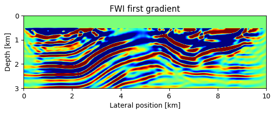

FWI with Quasi-Newton methods from the NLopt library
In this notebook, we demonstrate how to interface the NLopt optimization library for full-waveform inversion with a limited-memory Quasi-Newton (L-BFGS) algorithm. Once again, we start by adding additional workers for parallel computing and by loading all necessary modules:
using SegyIO, HDF5, PyPlot, JUDI, NLopt, Random, LinearAlgebra, PrintfWe load the FWI starting model from the HDF5 model file and set up the JUDI model structure:
m0, n, d, o = read(h5open("overthrust_model.h5","r"),"m0","n","d","o"); title("Starting model")
model0 = Model((n[1],n[2]), (d[1],d[2]), (o[1],o[2]), m0);
imshow(sqrt.(1f0./m0)', cmap="GnBu", extent=(0,10,3,0));
xlabel("Lateral position [km]");
ylabel("Depth [km]");Then we read the SEG-Y file containing our test data set. The data was generated with a 2D excerpt from the Overthrust velocity model and consists of 31 shot records with 2 seconds recording time. We load the data and set up a JUDI seismic data vector:
block = segy_read("overthrust_shot_records.segy");
d_obs = judiVector(block);[33m[1m┌ [22m[39m[33m[1mWarning: [22m[39mFixed length trace flag set in stream: IOBuffer(data=UInt8[...], readable=true, writable=false, seekable=true, append=false, size=7076688, maxsize=Inf, ptr=3601, mark=-1)
[33m[1m└ [22m[39m[90m@ SegyIO ~/.julia/dev/SegyIO/src/read/read_file.jl:36[39mextent = [0, 10, 2, 0]
figure(figsize=(7, 7))
subplot(221)
imshow(d_obs.data[1], vmin=-1, vmax=1, cmap="PuOr", extent=extent, aspect=4, interpolation="hamming")
xlabel("Receiver position(km)")
ylabel("Time(s)")
subplot(222)
imshow(d_obs.data[6], vmin=-1, vmax=1, cmap="PuOr", extent=extent, aspect=4, interpolation="hamming")
xlabel("Receiver position(km)")
ylabel("Time(s)")
subplot(223)
imshow(d_obs.data[11], vmin=-1, vmax=1, cmap="PuOr", extent=extent, aspect=4, interpolation="hamming")
xlabel("Receiver position(km)")
ylabel("Time(s)")
subplot(224)
imshow(d_obs.data[16], vmin=-1, vmax=1, cmap="PuOr", extent=extent, aspect=4, interpolation="hamming")
xlabel("Receiver position(km)")
ylabel("Time(s)")
tight_layout()

Since the SEG-Y file contains the source coordinates, but not the wavelet itself, we create a JUDI Geometry structure for the source and then manually set up an 8 Hz Ricker wavelet. As for the observed data, we set up a JUDI seismic data vector q with the source geometry and wavelet:
src_geometry = Geometry(block; key="source");
src_data = ricker_wavelet(src_geometry.t[1], src_geometry.dt[1], 0.008f0);
q = judiVector(src_geometry, src_data);Optimization
Rather than implementing the L-BFGS algorithms in Julia ourselves, we interface the NLopt optimization library. This library requires objective functions with the current variable and gradient as input arguments and the function value as the only output argument. For this reason, we build a wrapper that is customized for the NLopt library around our fwi_objective function. The function f! takes a vectorized estimate of the current model as well as the (vectorized) gradient as input arguments. NLopt uses double precision for floating point variables, so the first step inside f! is to reshape and convert the model to single precision. Then we choose a randomized subset of sources and shot records and compute the function value fval and gradient of the FWI objective function. We then set the gradient in the water layer to zero and overwrite the input gradient grad with the new gradient. Furthermore, we keep track of the number of function evaluations through increasing the count variable, which will serve as the termination criterion for the algorithm. In Julia, we set up f! in the following way:
batchsize = 8;
count = 0;
# NLopt objective function
function objf!(x, grad)
if count == 0
@printf("%10s %15s %15s\n","Iteration","Function Val","norm(g)")
end
# Update model
model0.m .= Float32.(reshape(x, model0.n))
# Seclect batch and calculate gradient
i = randperm(d_obs.nsrc)[1:batchsize]
fval, gradient = fwi_objective(model0, q[i], d_obs[i])
# Reset gradient in water column to zero
gradient = reshape(gradient, model0.n)
gradient[:,1:21] .= 0f0
if length(grad) > 0
grad[1:end] = vec(gradient)
end
global count += 1
@printf("%10d %15.5e %15.5e\n",count, fval, norm(g))
return convert(Float64, fval)
endobjf! (generic function with 1 method)g = zeros(prod(model0.n))
f0 = objf!(vec(model0.m), g)
# Reset count
global count = 0;[33m[1m┌ [22m[39m[33m[1mWarning: [22m[39mDeprecated model.n, use size(model)
[33m[1m│ [22m[39m caller = ip:0x0
[33m[1m└ [22m[39m[90m@ Core :-1[39m
Iteration Function Val norm(g)
1 2.61794e+05 2.83025e+05imshow(reshape(g, model0.n)', vmin=-1e3, vmax=1e3, extent=(0,10,3,0), cmap="jet")
title("FWI first gradient")
xlabel("Lateral position [km]");
ylabel("Depth [km]");
As in our gradient descent and Gauss-Newton example, we define bound constraints for the squared slowness to prevent velocities from becoming negative or too large:
# Squared slowness
mmax = (1.3f0).^(-2)
mmin = (6.5f0).^(-2)0.023668641f0The NLopt library offers a range of different optimization algorithms, from which we choose the L-BFGS method. We create an optimization object called opt by specifying the algorithm we want to use and the dimenions of the unknown model vector. We then set the upper and lower bounds of the variable, define f! as the objective function and set the termination criterion to be a maximum of 15 function evaluations:
opt = Opt(:LD_LBFGS, prod(model0.n))
opt.lower_bounds = mmin
opt.upper_bounds = mmax
# min_objective!(opt, f!)
opt.min_objective = objf!
opt.maxeval = 1515Remark: Subsampling the number of sources should in practice never be used for second order methods such as L-BFGS. Specialized stochastic second order methods exist, but differ from standard Quasi-Newton methods. We only use source subsampling to reduce the computational cost of our example. Having set up the objective function, bound constraints and termination criterion, we can now run the inversion:
** This example requires ~200 MB of memory per gradient, i.e. 800 MB with four parallel workers. It runs for approximately 1 minutes. **
@time (minf, minx, ret) = optimize(opt, model0.m[:]) Iteration Function Val norm(g)
1 2.46220e+05 2.83025e+05
2 2.36730e+05 2.83025e+05
3 1.67086e+05 2.83025e+05
4 1.21062e+05 2.83025e+05
5 9.66964e+04 2.83025e+05
6 7.97872e+04 2.83025e+05
7 6.54899e+04 2.83025e+05
8 5.23806e+04 2.83025e+05
9 4.46780e+04 2.83025e+05
10 4.05689e+04 2.83025e+05
11 3.14446e+04 2.83025e+05
12 3.06919e+04 2.83025e+05
13 2.52438e+04 2.83025e+05
14 2.52550e+04 2.83025e+05
15 2.24706e+04 2.83025e+05
65.695496 seconds (444.24 k allocations: 1.269 GiB, 0.10% gc time, 0.20% compilation time)
(22470.578125, [0.4444444477558136, 0.4444444477558136, 0.4444444477558136, 0.4444444477558136, 0.4444444477558136, 0.4444444477558136, 0.4444444477558136, 0.4444444477558136, 0.4444444477558136, 0.4444444477558136 … 0.05060886426348713, 0.05044609939336615, 0.050292761170062046, 0.05017357884927398, 0.05011064413011435, 0.05011993876926194, 0.05020965433880526, 0.05038047472521424, 0.05062740429803987, 0.05094217839179781], :MAXEVAL_REACHED)We plot the final velocity model after 15 function evaluations:
imshow(sqrt.(1f0./reshape(minx, model0.n))', cmap="GnBu", extent=(0,10,3,0), vmin=1.5, vmax=5.4); title("FWI with L-BFGS")
xlabel("Lateral position [km]");
ylabel("Depth [km]");